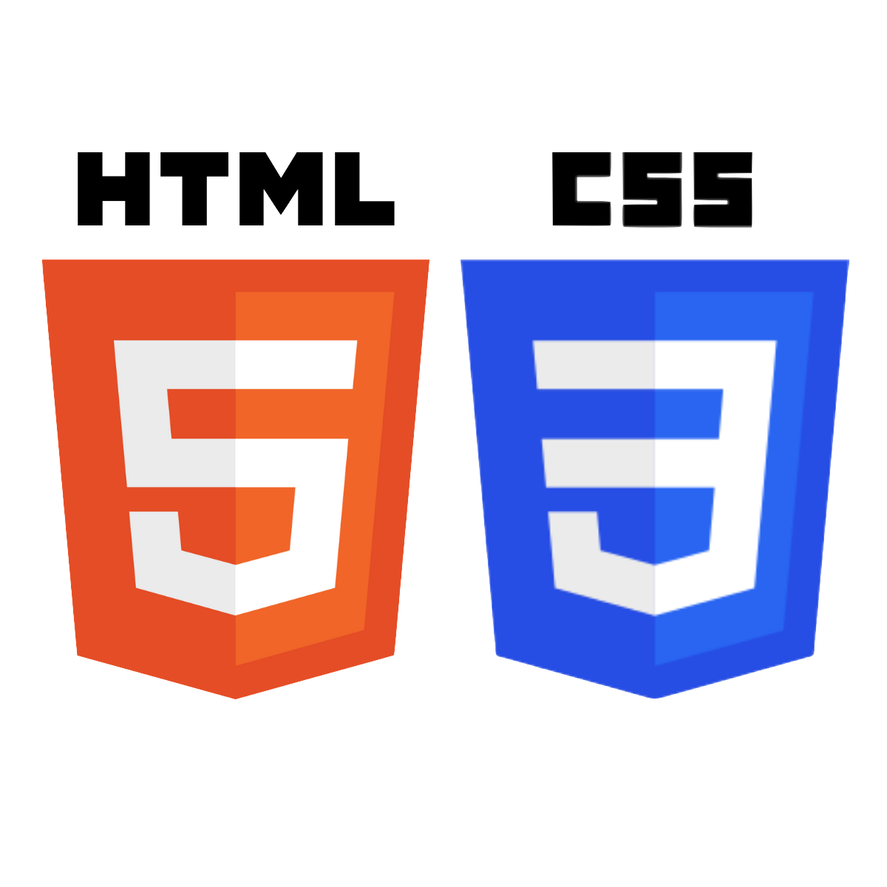

Hello!
My name is Vrinda Shorewala.
I am a junior at Santa Clara University majoring in Computer Science with an emphasis in Security and a minor in Management of Information Systems.
I am interested in Security, Machine Learning, and App Development.
I am also very passionate about education, especially in programs encourage women in STEM.
SKILLS
-
 2 years experience Coded several class projects invloving data structures
2 years experience Coded several class projects invloving data structures -
 Introduction to Computer Science and Programming using Python (MITx certificate)
Introduction to Computer Science and Programming using Python (MITx certificate) -

Coded the website for project TrashThat for HackForHumanity 2019
-
 2 years experience Coded several class projects including Unscramble Words and Tic-Tac-Toe
2 years experience Coded several class projects including Unscramble Words and Tic-Tac-Toe
-
Used the ArcSight SIEM tool to monitor client logs and analyse them during an internship
-
Proficient In Charts, Functions, PivotTables, and Workbook Management
-
Chief Editor for High School Yearbook where I edited, created, and complied multiple pages
-
 Experienced in iterative solutions, simple graphical user interfaces, and application to engineering problems
Experienced in iterative solutions, simple graphical user interfaces, and application to engineering problems -
 Beginner : Coded a few projects
Beginner : Coded a few projects -
 Created a Piggy Roll game for Game Jam Titans 2014
Created a Piggy Roll game for Game Jam Titans 2014 -
Created a Jasmine and The Flying Carpet game for Game Jam Titans 2015
EXPERIENCES
-
July 2019-September 2019I interned in the Security Operations Center (SOC) at Sequretek for 2 months. During my internship, I learned about the basics of cybersecurity including, but not limited to, OWASP protocols, types of malware, network security, encryption methods, and mitigation techniques. I also monitored client logs to detect network breaches and investigated potential attacks. Based on the investigation, I sent reports to clients outlining details of the breach and suggested short-term and long-term mitigation actions.September 2017-February 2018I volunteered at Colaba Municipal School as a Computer Science teacher. I accompanied 4-5 other classmates to teach grades 2-4 basic Computer Applications such as Microsoft Excel, Microsoft Powerpoint, Microsoft Word, and Scratch. I planned lesson projects such as Stop-Motion Films on Powerpoint and About Me documents on Word to make the class more interactive and interesting for the students.June 2017-August 2017I volunteered at ADAPT foundation, a school for differently-abled children as a teaching assistant. I worked with 10-15 children in the age group 7-12 years old. I planned lessons and created worksheets for the students to work on. I also initiated activities with the children such as crafting their own fidget spinners that they could use (to help them concentrate in class) as well as outdoor games (to help their motor skills).
PROJECTS
- TRASH THAT!The project involved a website where the user could upload the image of an object. Using AWS image recognition techniques and a database, the object would be sorted into Recycling, Trash, or Compost. I developed frontend for the website using HTML and CSS.
- JASMINE AND THE FLYING CARPETI created this girl-power game using GameMaker Studio along with 2 other team members. It involved princess Jasmine flying on the flying carpet, collecting coins and avoiding birds and other distractions in order to go save Aladdin.
- PIGGY ROLLI created this game using Unity. It was a 2D path traversal game that involved the movement of a piggy bank using the keyboard to collect the maximum number of coins.
- SORTING HATI coded this project using Java. It included 3 mini games - Unscramble the Word, Tic-Tac-Toe, and 7-Up-7-Down. Based on their performance in each game, the user was “sorted” into one of the 3 houses in my high school.